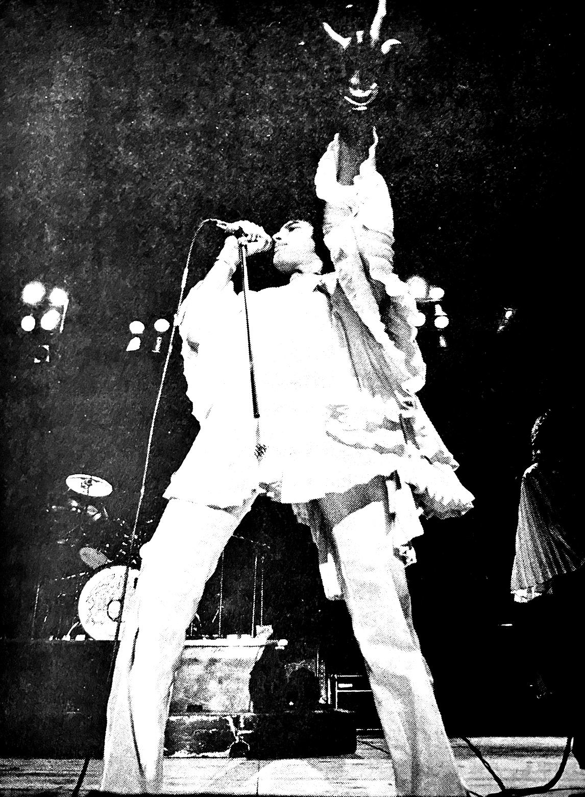

Queen's First Japanese Performance Highlights
April 19th, 1975
By Itsuko Furubayashi
(It really is better when the ushers push back! People who say otherwise are letting their egos get the better of them... think of the inconvenience you are causing others by not being kept in line!)
The second song was always Now I'm Here. The light show for this song was elaborate, and at the climax of the song, a big flash of light came, illuminating Freddie in all of his glorious action. The PA system sounded great as well.
The intro for the third song, Ogre Battle, was quite intense. An impressive "battle" was born from Brian's guitar, and the lighting at that part was interesting also. Green lights illuminated the stage in a creepy manner, and there was this feeling that a man-eating demon might pop out in the theater at any moment... it was very dramatic. It truly was quite a performance, with no sense of insincerity whatsoever. The chorus of this song was perfectly defined, and Brian's guitar work was bright and clear.
Next was Father to Son. The ending had a heavier, more lively [lit. cheerful] arrangement than on the record. Maybe because the preceding song, Ogre Battle, was so heavy, I couldn't help but feel impressed by how Queen-like, elegant, and moving this contrast was.
Over the lingering sounds of Father to Son, the sad and dramatic story of White Queen began to play. Freddie played his piano gracefully here, but Roger's drumming shouldn't be overlooked either. On the other hand, I found myself wondering what was up with John, and F.C. staff member Risa told me she saw him yawning...
Then they switched gears with a powerful performance of Flick of the Wrist, with John keeping an undulating pace. I thought this song would be impossible to recreate onstage, but things unfolded much as they did on the record thanks to John's remarkable bass playing. The ending of Brighton Rock could've used a bit of that charm...
The seventh song was Doing All Right, which didn't leave much of an impression, but that may just be because the eighth song was a medley of great songs that blurred it a big in comparison. Before this medley began, Freddie made a point of mentioning that Killer Queen was coming up, and the audience's spirits were naturally raised.
So when In the Lap of the Gods started, everyone held their breath and stared at the stage, wondering when they would launch into Killer Queen. But it has to be said that Roger's voice in Lap of the Gods is something to behold! He sounds almost exactly like he does on the record! It seems like it should be impossible. Really I think the highlight of this song was that singular voice of his.
Then, after that, they threw Killer Queen at us. Following the example of the band, everyone clapped their hands and stomped their feet to that "DOOT DOOT DOOT DOOT..." beat at the beginning. And as soon as Freddie came in with "She keeps..." the climax of the show began! I think a lot has already been said about Freddie's pianowork on this one.
The tenth song was that long one, Black Queen, but it wasn't part of a medley and we got to hear the whole thing through. But I can't say they didn't shorten a few things here and there! Leroy Brown, which was the next song, is a good example...
Leroy Brown gave off an awesomely dark feel, similar to Killer Queen, and Brian had a chance to play the ukulele-banjo, which was well-received at every show. Oh yeah, and I must add that John brought his triangle into the mix during Killer Queen... I always get a kick out of that part.
Once the Leroy Brown medley was over, they began their 18th number, Son and Daughter. This has been a part of their repertoire for years now, and Freddie's stage presence was so self-assured, especially during the chorus. It felt daring.
Towards the middle of the performance, Brian's elaborate guitar solo showed up, and we got to hear him weave in some Japanese folksongs. The others came back onstage and again they achieved the perfection of their total sound. While Brian was doing his solo, Freddie had changed his outfit and transformed from a "White Queen" into a "Black Queen"! Let me see if I can remember what everyone wore.
For this change of clothes during Son and Daughter, Freddie had on a white jumpsuit with a pleated cape. John wore a black suit. Roger... was a little too elaborate for me to remember well, but I think it varied depending on the night. Brian wore a stunning costume that made him look like a stylized bird.
When Freddie changed, he won a black V-neck tee shirt and tight black pants. He really got into it with Son and Daughter, yelling "Alright, stand up! Clap your hands!" as they rushed into Keep Yourself Alive. The audience had been waiting for a cue to stand, and both we the audience and Queen enjoyed our time immensely!
Things got more and more exciting with The Seven Seas of Rhye, and a hard rock performance of Stone Cold Crazy had the girls on the verge of fainting. Then they did the ever-popular Liar.
Boiling over with excitement and yelling out "LIAR!" during the chorus with all the other people, I was so glad I was able to come be together with Queen like this. During the last number In the Lap of the Gods... revisited, the smoke machine started up again, and I began to feel the pull on my heartstrings that it was all soon going to be over, and I even cried a bit during the last show. Freddie's beautiful piano resounded and I thought I heard him yell "Sayonara!", and with that, in a flash the drama onstage was gone. At every show, people were shouting "ENCORE! ENCORE!" with such insanity that the four of them reappeared and treated us to an another excellent rock'n'roll medley.
Big Spender, Modern Times Rock'n'Roll, and Jailhouse Rock–all arranged and done with Queen flair, and Freddie brought out red carnations to throw during the climax.
The second encore was See What A Fool I've Been, and this was the end, as the four of them left the stage for good. Even though the show was over, the British national anthem began to fill the venue, sending off impressed fans. Of course we the staff were impressed as well.